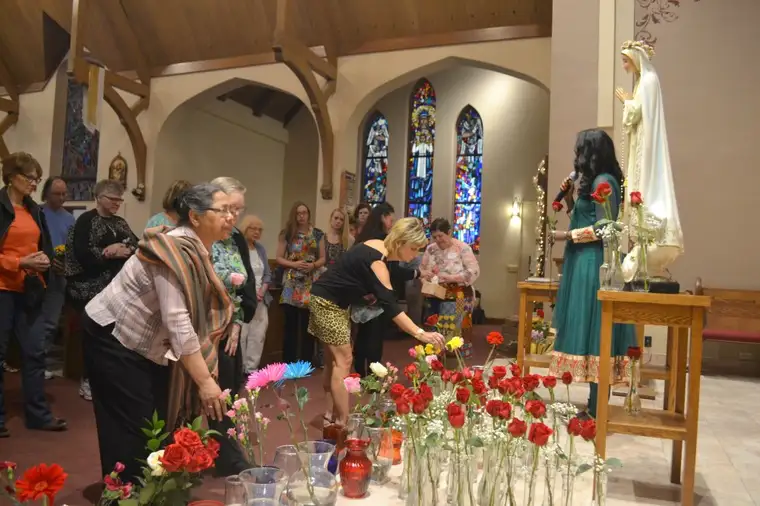
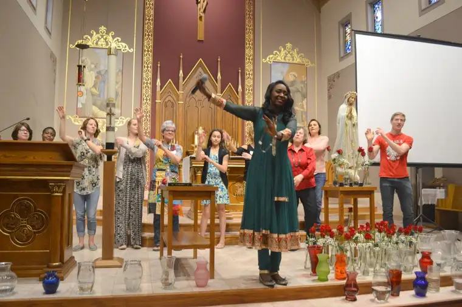

FARGO — Immaculee Ilibagiza’s personal spin on the “Eat, Pray, Love,” theme would likely be, “Pray, Dance and Bring Flowers.”
Concluding the first evening of a recent two-day spiritual retreat at St. Anthony of Padua Catholic Church here, Ilibagiza, a survivor of the mid-1990s Rwandan civil war, had just one request: “Tomorrow, please bring a flower.”
Many of the 288 participants returned the next morning grasping florals of different varieties and colors. And when Ilibagiza asked them to come forward to lay the burdens of their hearts, represented by the flowers, in water-filled vases at the base of the altar, intermittent tears dropped into them as well.

Cathy Bjorklund, of Moorhead, recalled how someone nearby noticed her empty hands.
“She gave me her flower, taking off a small part to take up herself, but then gave the rest of it to me,” she said. “I think Immaculee was touching people to really reach out in love to others.”
Hearing Ilibagiza share the tragic story of how most of her family was killed, along with a million others, while she huddled in fear with seven other females for three months in a bathroom — and eventually forgave the killers — opened something in the souls of those present, Bjorklund suggested.
When she heard about a couple in attendance whose adult son was murdered, Bjorklund decided to give them a book by Ilibagiza she’d just purchased on how to find joy in suffering.
“I wanted to reach out, but thought, ‘What can I do?'” she said. “They maybe can’t use it right now; it’s going to be a process for them mourning the loss of their son. But maybe someday.”
The couple, Lloyd and Mary Ann Traut, are the parents of Sam Traut, slain here in 2015 after opening his door to convicted killer Ashley Hunter.
According to Joe Hendrickx, evangelization director, “(Immaculee) made a big impact on their lives, and now they pray for Ashley Hunter’s conversion ‘to good and to God’ daily.”
Another attendee, Hendrickx said, lost several family members in recent years, including her son to suicide. “She came out of the retreat with a smile on her face and was wowed by the holiness of Immaculee.”
‘Counting your blessings’
Koco Mylene Nzi, a native of Africa’s Ivory Coast, was reading Ilibagiza’s story at work not long ago when her co-worker, Kathy McIntyre, saw the title.
“She told me Immaculee was coming to Fargo soon,” Nzi said. “I’m like, ‘Really? We’ve got to go!'”
Hearing Immaculee was rejuvenating, she said. “I’m going to trust in the Lord more, and not complain as much. Reading her story, you find yourself counting your blessings and being grateful.”
Nzi also was moved by the offering of flowers — a gift to Jesus’ mother, Mary. “I realized I can’t hide from her or be fake. The flowers were a gift from my heart.”
While the first day of the retreat focused on the story of Ilibagiza’s survival, on day two, she highlighted reported Marian apparitions at Kibeho, Africa, 12 years before the genocide. Ilibagiza said Mary had warned the people then of a great calamity if they did not return to God.
“Mothers love you even if you’ve done something wrong — they want to put their arms around you and hug you,” McIntyre said, explaining Marian devotion. “She’s helping us to know her son through her love.”

Peter Vandal, 17, of Langdon, missed a school dance to attend the retreat, not knowing he’d be asked to dance in front of nearly 300 people there. But when Ilibagiza invited people to help her lead an African prayer dance, Vandal was among them.“I don’t really like getting up in a crowd,” he said, “but I did it for Mary.”
Swaying back and forth with her hands up, Ilibagiza translated words to the song: “Before the valleys and mountains were created, God had you in mind, Mother.”
Vandal, who is home-schooled, learned about Ilibagiza after reading her memoir, “Left to Tell,” for a book report. “It was so powerful how she encountered God and knew how to forgive people, and how powerful prayer is for her — and for all of us.”
His mother, Sheila, added, “We’re now being faced with situations where there’s so much hatred. We need to heal to be able to overcome, to get to heaven and be together.”
Noting there were more women than men at the event, Vandal’s father, Mark, said the messages also applied to men, especially hearing of Ilibagiza’s faith-filled father.
“I realized, even if I fail at everything else, if I give (my family) the faith, God will make good things happen.”
[For the sake of having a repository for my newspaper columns and articles, I reprint them here, with permission, a week after their run date. The preceding ran in The Forum newspaper on May 12, 2018.]